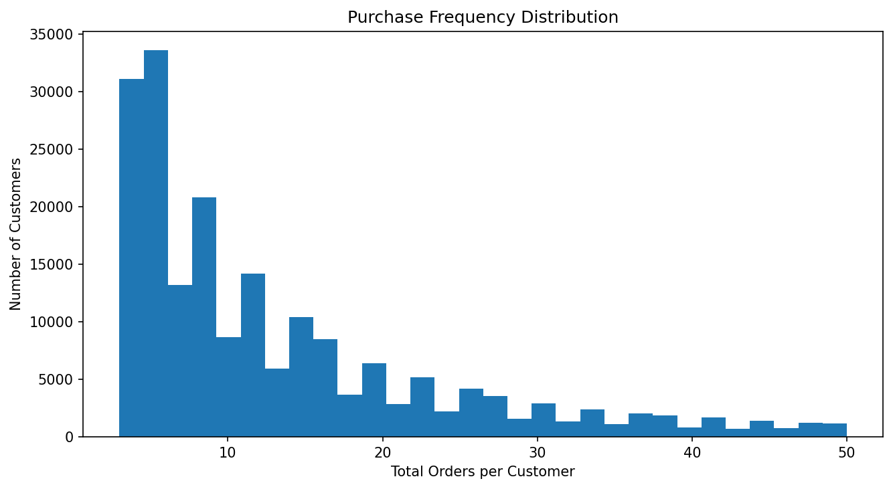
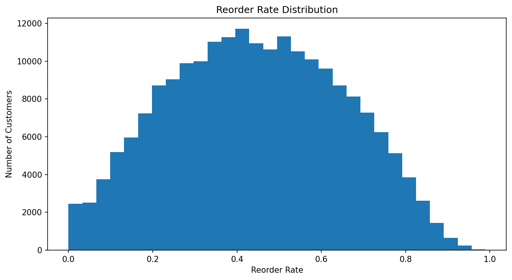
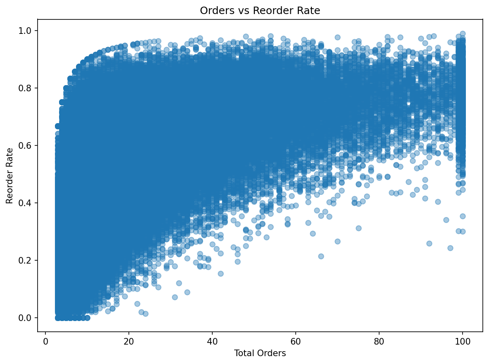
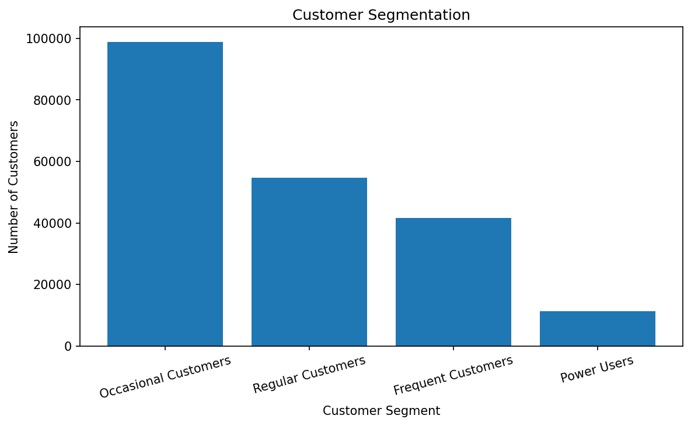
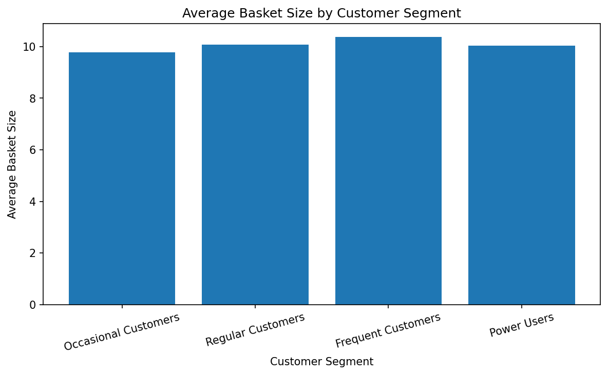
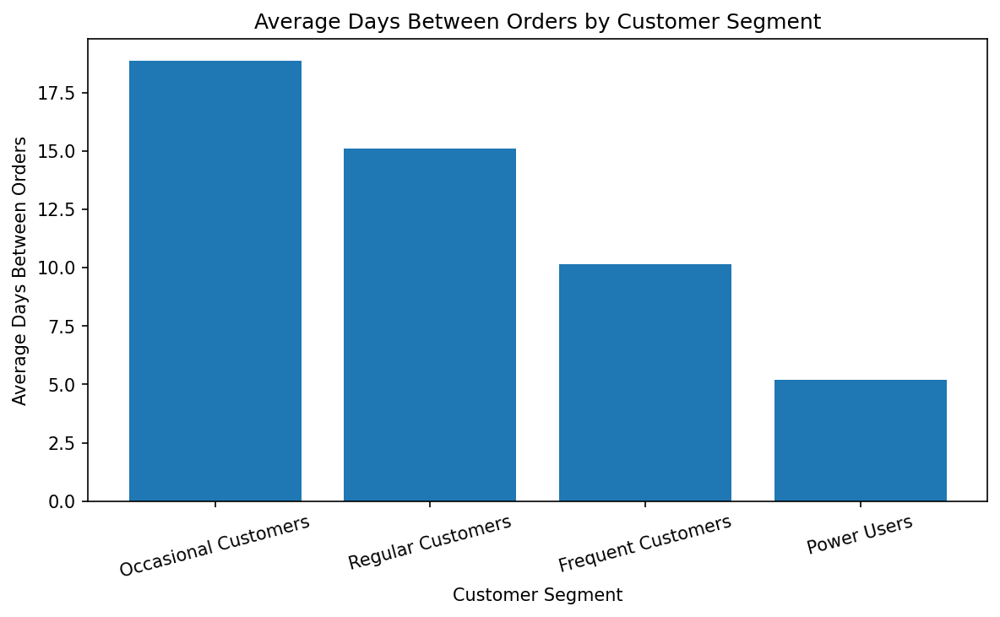
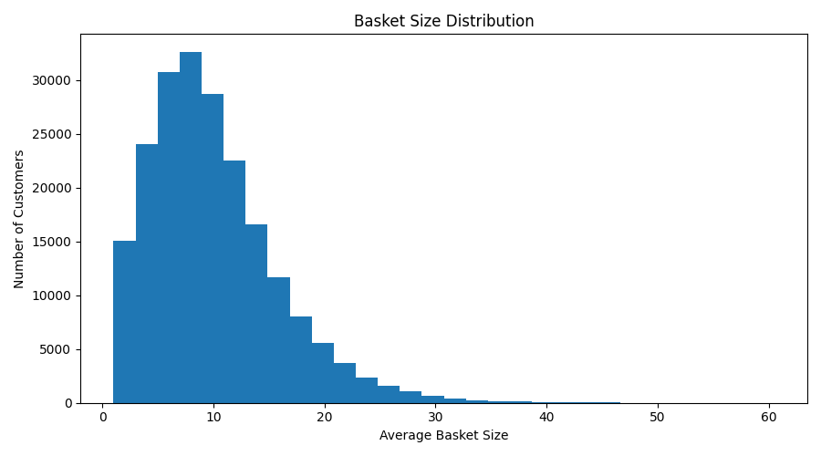

Purchase Frequency Distribution
Shows how frequently customers place orders across the dataset.

This report analyzes customer behavior from the Instacart Market Basket dataset. It focuses on purchase frequency, reorder behavior, and customer segmentation using aggregated customer metrics exported from DuckDB and visualized with Python and Matplotlib.
Engagement: Power Users represent the most active customers, averaging 68.93 orders per customer. These customers likely drive a disproportionate share of demand and are prime candidates for loyalty programs.
Basket behavior: Frequent Customers show the largest baskets, suggesting consistent purchasing routines and strong cross-category demand.
Reorder patterns: Power Users demonstrate the strongest reorder behavior, indicating habitual purchasing and potential brand loyalty.
Shows how frequently customers place orders across the dataset.

Shows how strongly customers tend to repurchase previously ordered products.

Compares purchase frequency and reorder behavior across customers.

Shows the distribution of customers across predefined behavioral segments.

Compares average basket size across customer segments.

Compares ordering cadence across customer segments.

Shows how average basket size varies across customers.

Purchase frequency shows how often customers place orders. Customers with more orders tend to contribute more stable long-term demand.
Reorder rate measures how strongly customers repurchase previously ordered products. Higher values suggest more routine or habitual purchasing behavior.
Customer segments group customers based on ordering frequency. This helps identify occasional buyers, regulars, and high-value repeat customers.